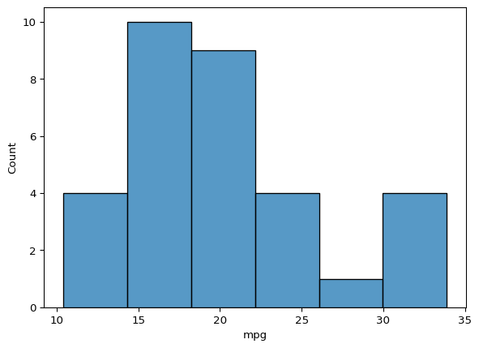
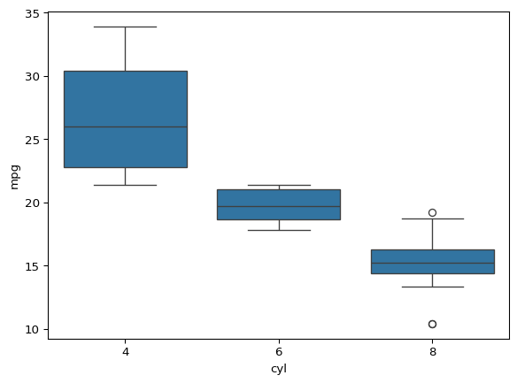

import numpy as np
import pandas as pd
import matplotlib.pyplot as plt
import seaborn as sns
from itables import show
import osDescriptive Statistics
Import Packages
Import Packages
dataset_path = os.path.join(os.getcwd(), "mtcars.csv")
mtcars = pd.read_csv(dataset_path)
show(mtcars, showIndex=False)| model | mpg | cyl | disp | hp | drat | wt | qsec | vs | am | gear | carb |
|---|---|---|---|---|---|---|---|---|---|---|---|
| Loading ITables v2.3.0 from the internet... (need help?) |
1. Find the car with the best mpg
max_mpg = mtcars["mpg"].max()
max_mpg_model = mtcars.loc[mtcars["mpg"] == max_mpg, 'model'].to_numpy()[0]
print(str(max_mpg_model) + " model has the highest mpg of " + str(max_mpg))Toyota Corolla model has the highest mpg of 33.92. Car with the worst mpg
min_mpg = mtcars["mpg"].min()
min_mpg_model = mtcars.loc[mtcars["mpg"] == min_mpg, 'model'].to_numpy()[0]
print(str(min_mpg_model) + " model has the highest mpg of " + str(min_mpg))Cadillac Fleetwood model has the highest mpg of 10.43. Car with the worst horsepower
min_hp = mtcars["hp"].min()
min_hp_model = mtcars.loc[mtcars["hp"] == min_hp, 'model'].to_numpy()[0]
print(str(min_hp_model) + " model has the highest mpg of " + str(min_hp))Honda Civic model has the highest mpg of 524. 5-number summary of displacement
mtcars["disp"].describe()count 32.000000
mean 230.721875
std 123.938694
min 71.100000
25% 120.825000
50% 196.300000
75% 326.000000
max 472.000000
Name: disp, dtype: float645. The median horse power
print("The median horsepower = " + str(mtcars["hp"].median()))The median horsepower = 123.06. The average mpg for manual and automatic cars
mean_mpg_man = mtcars[mtcars["am"] == 1]['mpg'].mean()
mean_mpg_auto = mtcars.loc[mtcars["am"] == 0, 'mpg'].mean()
print("The average mpg of manual cars = " + str(mean_mpg_man))
print("The average mpg of automatic cars = " + str(mean_mpg_auto))The average mpg of manual cars = 24.39230769230769
The average mpg of automatic cars = 17.1473684210526337. Histogram of mpg
sns.histplot(x='mpg', data=mtcars)
8. Boxplot of mpg
sns.boxplot(x='cyl', y='mpg', data=mtcars)
9. Crossstab of count of manual and automatic cars
df = pd.crosstab(mtcars["am"] == 1, mtcars["am"] == 0)
show(df)| am | False | True |
|---|---|---|
| am | ||
| Loading ITables v2.3.0 from the internet... (need help?) |
10. Crosstab of count of gear and cylinder
df = pd.crosstab(mtcars["am"],mtcars["cyl"])
show(df)| cyl | 4 | 6 | 8 |
|---|---|---|---|
| am | |||
| Loading ITables v2.3.0 from the internet... (need help?) |
11. Correlation between weight of the car and mpg
corr = round(mtcars["wt"].corr(mtcars["mpg"]), ndigits=3)
print('There is has a strong negative correlation of ' + str(corr) +'. As the weight of the cars increases, mpg decreases')There is has a strong negative correlation of -0.868. As the weight of the cars increases, mpg decreases